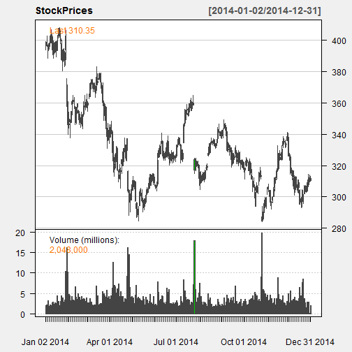
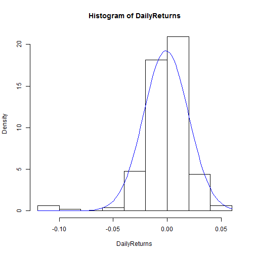

The application allows the user to test this assumption for selected stock prices
The user chooses
The application displays
Check it here: https://kirrintreasureisland.shinyapps.io/stockreturns/
quantmod library (do not worry about the warning):library(quantmod)
StockPrices <- getSymbols("AMZN",
from = "2014/01/01", to = "2014/12/31",
auto.assign = FALSE)
## Warning in download.file(paste(yahoo.URL, "s=", Symbols.name, "&a=",
## from.m, : downloaded length 13657 != reported length 200
PriceAdjusted <- StockPrices$AMZN.Adjusted
DailyReturns <- diff(log(PriceAdjusted)) # definition of returns
DailyReturns <- as.numeric(DailyReturns)[-1] # the first value is NA
chartSeries(StockPrices, theme = chartTheme("white"))

hist(DailyReturns, prob=TRUE)
x <- seq(from=min(DailyReturns),to=max(DailyReturns),length.out=500)
curve(dnorm(x, mean=mean(DailyReturns), sd=sd(DailyReturns)),
add=TRUE, col=4) # added normal density curve
